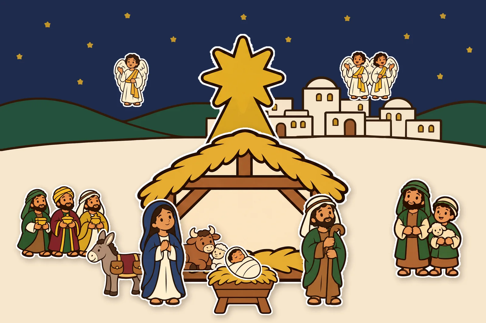

Bônus 1
A História do Natal para Colorir
6 cenas grandes da história, para pintar enquanto um adulto recorta as peças.
Para viver em família, noite a noite
Um devocional em família de 24 dias até o Natal, com um presépio de papel que vocês montam peça por peça enquanto contam às crianças a história do nascimento de Jesus.
Uma peça por noite. Um pedaço da história de cada vez.
R$ 14,99 · pagamento único · PDF para imprimir em casa
Veja tudo o que você vai receber ↓
O sentido de celebrar
Entre compras, ceia e presentes, a história do nascimento de Jesus costuma ficar para depois. O Presépio Noite a Noite traz essa história para dentro de casa sem que você precise planejar nada: cada dia já vem com a leitura, a pergunta, a oração e a peça ou a atividade certa.
Um jeito simples de esperar o Natal juntos.
Como funciona
As peças na ordem em que aparecem no kit. Na última noite, o Menino Jesus chega à manjedoura.
Uma parte curta da história, adaptada da Bíblia para crianças.
Cada noite traz uma pergunta simples para a família conversar.
Dobre a aba e a peça fica em pé. O presépio ganha uma peça nova.
Devocional em família
Nos dias pares, uma parte da história e uma peça nova no presépio. Nos dias ímpares, um devocional curto e uma atividade. Todo dia tem uma pergunta para conversar e uma oração.
Conheça os materiais
Um encontro por dia até o Natal, com leitura curta, pergunta para conversar e oração. São 24 orações ao todo.
Caça-palavras, labirinto até Belém, ligue os pontos, jogo da memória, sombras, história em ordem e mais. Uma para cada dia de devocional.
A história do nascimento de Jesus em 12 partes, com uma pergunta para conversar e o que fazer em cada noite.
Maria, José, anjos, pastores, sábios, estábulo, manjedoura, estrela e o Menino Jesus, com aba para ficar em pé.
As mesmas peças em contorno, para a criança pintar antes de montar.
Um fundo noturno para apoiar atrás do presépio, também em versão para colorir.
Para marcar cada noite e ver o Natal chegando.
Como imprimir, que papel usar e os ritmos para começar: 24 dias, 12 noites, 6 noites ou uma noite especial.
Imagens de páginas reais do kit. Produto digital em PDF A4: impressão, papel e materiais não estão inclusos.
Começa quando você quiser
24
O devocional completo: comece em 1º de dezembro e, na véspera de Natal, o Menino Jesus chega à manjedoura.
12
Uma peça por noite. Quem começa em 13 de dezembro termina na véspera de Natal.
6
Duas peças por noite, para quem começar mais perto do Natal.
1
Leiam os cartões em sequência e montem tudo de uma vez, no dia que for melhor para vocês.
E ainda vem junto
6 cenas grandes da história, para pintar enquanto um adulto recorta as peças.
12 perguntas para a família conversar na mesa de Natal sobre o nascimento de Jesus.
Cada noite em duas frases e um gesto, para crianças de 2 a 4 anos.
“Nosso presépio está completo!”, com espaço para o nome da criança. Vira lembrança e foto.
História para contar. Presépio para montar. Lembrança para guardar.
Ficha técnica
Presépio Noite a Noite
R$14,99
Pagamento único, sem mensalidade. Dá cerca de R$ 0,62 por dia de devocional.
Quero montar o meu presépioPagamento processado pela Cakto. Os arquivos chegam no seu e-mail depois da confirmação do pagamento.
Receba os arquivos e veja tudo com calma. Se o kit não for o que você esperava, peça o reembolso em até 7 dias depois da compra, pela Cakto, e receba de volta o valor pago.
Antes de começar
Não. O produto é 100% digital: você recebe os arquivos em PDF para imprimir. Nada é enviado pelo correio.
Depois da confirmação do pagamento, o acesso chega no e-mail usado na compra. Confira também as caixas de spam e de promoções.
Não. Você pode levar o arquivo a uma gráfica ou papelaria e imprimir lá.
Para as peças, um papel mais grosso (180 g) deixa o presépio firme. Com sulfite comum, cole a folha num papelão fino, como o de uma caixa de cereal, antes de recortar. Para os cartões, sulfite comum serve.
De 3 a 9 anos, com um adulto lendo e recortando junto. Para crianças de 2 a 4 anos, use o bônus Versão para os Pequenininhos.
Sim. As histórias seguem os textos de Lucas e Mateus em linguagem cristã para qualquer igreja. Quando um detalhe vem da tradição, como o boi e o jumentinho, o cartão avisa.
Você escolhe o ritmo: 24 dias, 12 noites, 6 noites ou uma noite especial. Dá para começar em qualquer dia até o Natal.
Esta versão é para uso da sua família. O uso com turmas ou grupos precisa de uma licença própria.
Sim. Os devocionais citam a Bíblia pela referência e contam com palavras simples para crianças, sem práticas de uma igreja só.
Não. É um pagamento único de R$ 14,99.
Uma peça por noite. Um pedaço da história de cada vez.
Quero o meu devocional com presépio por R$ 14,99Arquivos para imprimir · Garantia de 7 dias · Pagamento pela Cakto